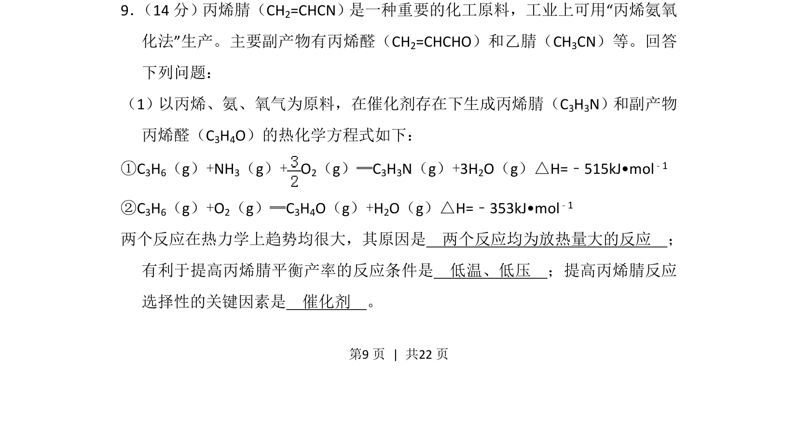
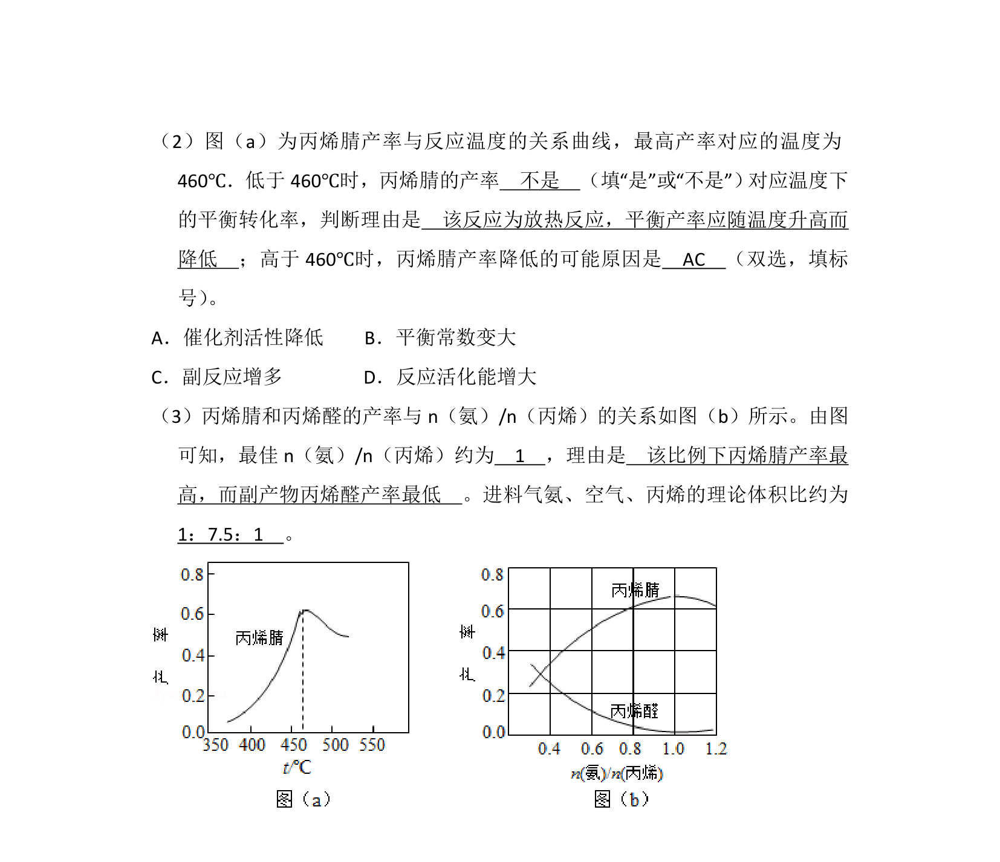
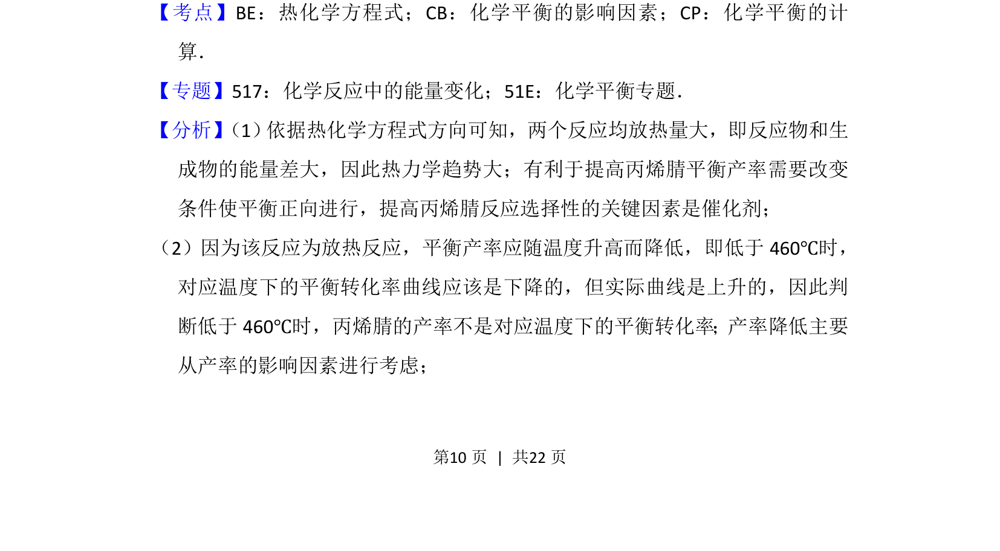
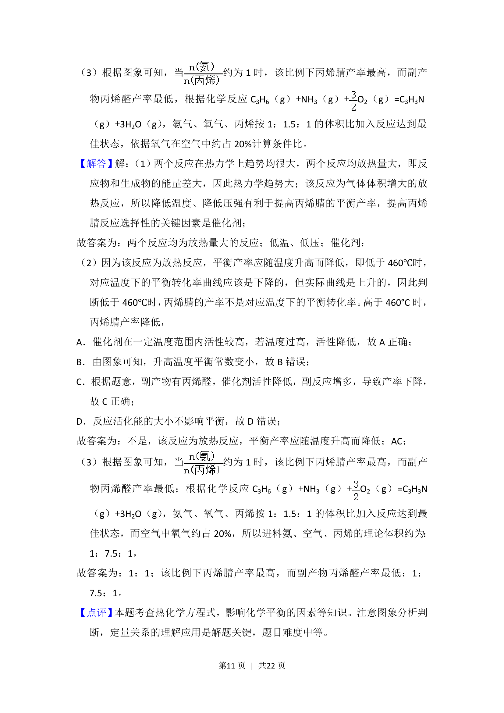

2016-新课标Ⅱ-09
考点：热化学方程式 化学平衡移动 催化剂选择性
题面


摘要
丙烯氨氧化法制丙烯腈的热化学与反应条件分析
关联考点
答案与解析



📄 原 PDF 第 9 页：
素材/真题/吉林/2008-2024·（吉林）化学高考真题/2016年高考化学试卷（新课标Ⅱ）（解析卷）.pdf
题干文本
9． （14分）丙烯腈（CH2=CHCN）是一种重要的化工原料，工业上可用“丙烯氨氧 化法”生产。主要副产物有丙烯醛（CH 2=CHCHO）和乙腈（CH3CN）等。回答 下列问题： （1）以丙烯、氨、氧气为原料，在催化剂存在下生成丙烯腈（C3H3N）和副产物 丙烯醛（C3H4O）的热化学方程式如下： ①C3H6（g）+NH3（g）+O 2（g）═C3H3N（g）+3H2O（g）△H=﹣515kJ•mol﹣1 ②C3H6（g）+O2（g）═C3H4O（g）+H2O（g）△H=﹣353kJ•mol﹣1 两个反应在热力学上趋势均很大，其原因是 两个反应均为放热量大的反应 ； 有利于提高丙烯腈平衡产率的反应条件是 低温、低压 ；提高丙烯腈反应 选择性的关键因素是 催化剂 。